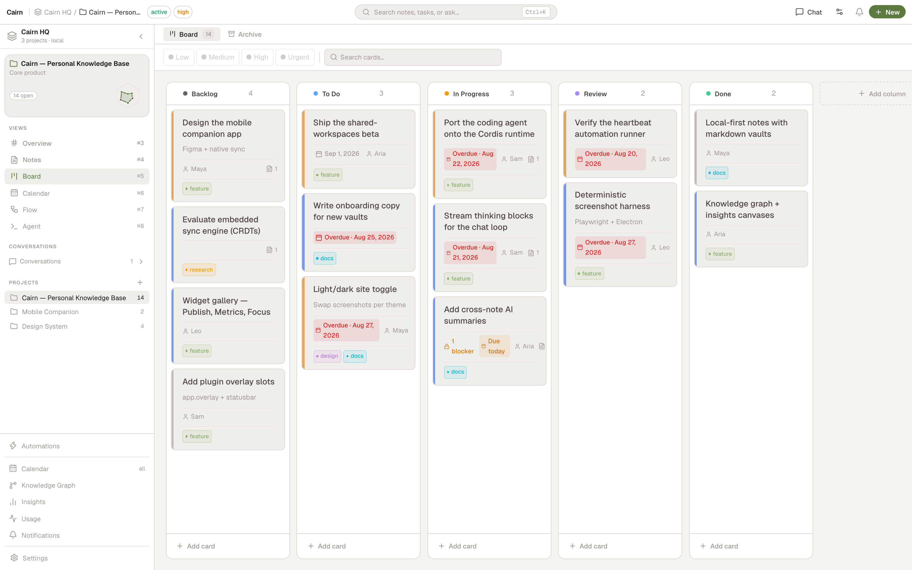

Board Kanban
Every project has a Board view — a drag-and-drop Kanban board with configurable columns, priorities, due dates, task dependencies, tags, and WIP limits. It's the same task data the AI chat, agent, calendar, and MCP tools work with, just laid out as cards.
Opening the board
Select a project and click Board in the sidebar views, or press ⌘3 (with the default view order). New projects start with five default columns — Backlog, Todo, In Progress, Review, Done — created automatically.

Creating a task
- Click + Add card at the top of any column
- Enter a title. Optionally add a description (markdown), priority, due date, and tags.
- Press Enter or click outside to save
Cards show a lightweight text preview when collapsed ([[wikilinks]] appear as clickable accent pills) and render full markdown when expanded, so switching to the Board stays fast even on boards with long descriptions.
Priorities
Each card has a priority — low, medium, high, or urgent — shown as a coloured stripe on the card and used to size dots in the Insights analytics canvases. Medium renders blue, consistently across the board, card detail, and charts.
Columns & WIP limits
- Add a column with the
+button at the right of the board - Rename by double-clicking the column header
- Reorder by dragging the grip handle
- Delete via the column's
⋯menu - WIP limits — set a maximum card count per column. When the limit is hit, the header badge turns amber and new cards can't be added through the UI (cards can still be dragged in).

Card detail
Click any card to open its detail view — as a modal, or in a panel beside the AI chat when the chat is open (both share one implementation, so they stay in sync). From the detail view you can:
- Edit the title and markdown description
- Set priority, due date, and assignee
- Add or remove tags
- Link notes to the card (bidirectional — the note knows its card, the card knows its note)
- Add or clear task dependencies
- See notes mentioned in the description —
[[wikilinks]]that resolve to a note but are not linked yet appear under Linked Notes as "Mentioned in description", with one-click link and open actions - Spawn Agent — kick off the built-in coding agent (or an external CLI agent) with the card's title and description pre-filled as the prompt
Task dependencies
A card can be marked as blocked by another card in the same project. A blocked card is visually flagged, and a blocker counts as resolved as soon as it moves to a done column or is archived. Circular dependencies are rejected automatically, and a blocker that reaches a Done column or is archived is cleared from every card that was waiting on it. Dependencies can be set from the card detail, from the AI chat, or via the MCP update_tasks tool (blockedBy / unblockFrom).
Ask the assistant for unblocked, active work and it uses search_tasks with the ready filter — only cards with no pending blockers that aren't already in a done column. Great for "what can I start right now?"
Moving & filtering
- Drag between columns — collision detection resolves the drop target from your actual pointer position, so drops land where you aim across any window size or scroll position, and drags stay smooth on busy boards.
- Reorder within a column — drag a card up or down.
- Move to another project — use Move to project in the card's right-click menu or its detail view. It lands in the target project's column of the same type (In Progress → In Progress), falling back to Backlog if there's no match, so its state is preserved.
- Filter toolbar — a persistent toolbar above the board has priority chips (Urgent / High / Medium / Low) — tap one or more to show only those priorities (toggle off to clear) — plus a search box that filters cards by title or description as you type. A Filters menu narrows the board further by assignee (including Unassigned), tags, due date (overdue, due within 7 days, no date) and "blocked by an open card". Filters combine, a match count shows in the toolbar, and a clear button resets everything. ⌘F still focuses the search.
- Saved views — save any combination of filters as a named view per project and switch between them from the Views menu.
- Context menu — right-click any card for Mark done / Reopen, Move to column, Priority, Due date, Move to project, Duplicate, Archive and Delete without opening the detail view. The same menu is used for tasks in the Calendar.
- Agent status — a card whose coding session is running shows an "Agent" pill, which turns into "Needs you" while the agent waits for an approval. Click it to jump to the session.
Every move is undoable with ⌘Z / ⌘⇧Z.
Shipped this week & at risk
Cards now record when they were finished (when they enter a Done column; cleared if you move them back out, kept when archived). The project Overview uses this to show everything finished in the last 7 days, plus an At risk list of open cards that need attention: overdue, blocked by an open card while due within 3 days, or sitting in In Progress / Review with no updates for a week. The Overview header also has a button that writes a weekly review or daily brief note into the project's Reviews folder — what shipped, what is at risk, the next unblocked cards by priority, and wikilinks to every note touched in the period.
You can also add cards from anywhere with Quick capture — ⌘⇧Space (Ctrl+Shift+Space on Windows/Linux) or the tray menu — which drops a card in a project's Backlog (or To Do).
Archive
Right-click a card and choose Archive to collapse it into a hidden section at the bottom of its column. Expand the section to review archived cards and restore any of them back to active. Archiving keeps a completed board tidy without deleting history; archived cards are excluded from the Calendar's overdue tracking and the "ready"/"due" task lists.
The board and the AI
The board isn't a separate silo — the AI chat, coding agent, and any MCP client read and write the same cards. The assistant can create cards, move them between columns, set priorities and due dates, add tags, link notes, and manage dependencies. See AI Chat and the MCP Server tool reference for the full set of task tools.